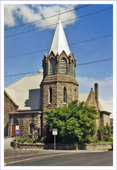

Welcome to the Pendleton UMC
We are the First United Methodist Church of Pendleton, Oregon! The mission of the United Methodist Church is to make disciples of Jesus Christ for the transformation of the world.

Services
- Choir Practice:
- 10:15 am (The choir does not meet in the summer.)
- Worship:
- 9:00 AM every Sunday
Pastor
Dr. Jim Pierce
Accompanist
Judy Jenner
Happenings
Worship
Worship is at 9:00 a.m. every Sunday in the Sanctuary. We also broadcast on the radio every Sunday on KUMA1290AM at 11:00 a.m.
Recordings of our worship may be heard here: https://app.box.com/s/tw1ii31bjwtjwx91uyqgbhr3s3goxoqs


© 2017 First United Methodist Church, Pendleton, Oregon | Legal Stuff